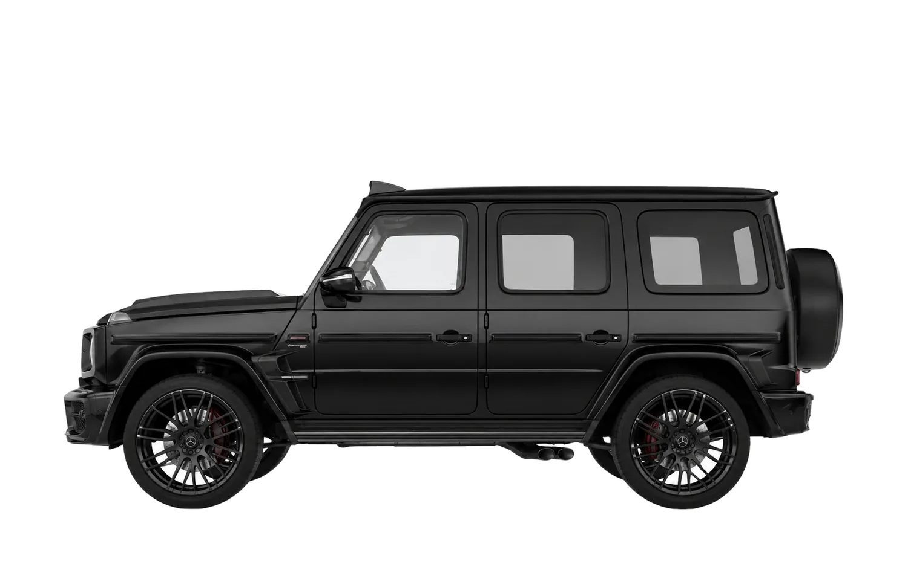
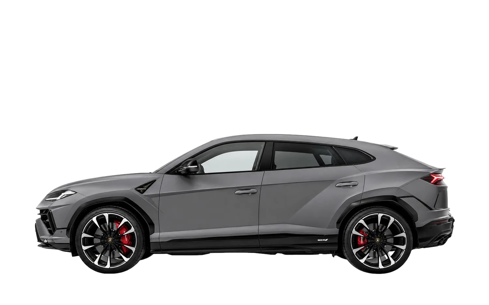
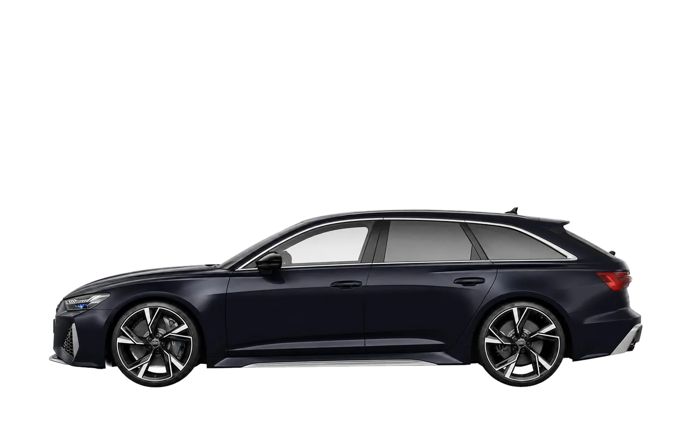

About Us
At Privé Motors, we are passionate about delivering an unrivaled luxury car rental experience in Dubai.
Whether you're exploring Dubai, attending a business event, or celebrating a special occasion, our dedicated team is committed to providing a seamless, reliable, and first-class experience from reservation to vehicle return.
At Privé Motors, we are passionate about delivering an unrivaled luxury car rental experience in Dubai.

Whether you're exploring Dubai, attending a business event, or celebrating a special occasion, our dedicated team is committed to providing a seamless, reliable, and first-class experience from reservation to vehicle return.

Our exclusive fleet showcases some of the world's most prestigious vehicles, including exotic supercars, luxury SUVs, executive sedans, and high-performance sports cars. Every vehicle is selected to meet the highest standards of luxury, performance, and comfort.

At Privé Motors, luxury is more than transportation — it's a lifestyle. We pride ourselves on exceptional service, attention to detail, and creating unforgettable moments behind the wheel.
Dubai's finest collection of sports, executive, and luxury vehicles — delivered with a concierge standard the city expects.
Trade License No.